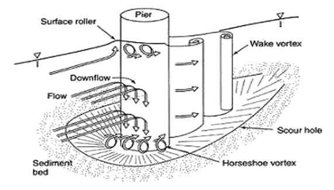
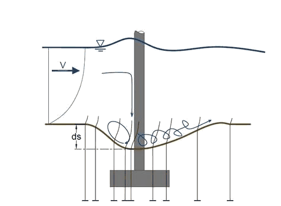

Bridge scour monitoring and inspection review
Scour is the erosion of soil around bridge foundations during high flows, and it is one of the most common causes of bridge failure. Around a pier, the flow turns downward at the front face and forms a horseshoe vortex at the base that carries sediment away.


I compared conventional scour monitoring methods and their field limitations, including difficulties obtaining measurements during floods and the limited spatial coverage of point measurements.
| Method | Main problem |
|---|---|
| Diver inspection | Hard to do in floods, and scour holes often refill afterward |
| Magnetic sliding collar | Limited resolution, can't track refilling |
| Float-out devices | Single use, no continuous depth reading |
| Smart rocks | Magnetic interference from traffic and steel |
| Sonar | Affected by turbulence, air bubbles and debris |
| Vibration-based methods | Need site-specific calibration |
I then reviewed piezoelectric approaches, including PVDF rod sensors, sensor-strip scour nets and energy-harvesting devices. These approaches offer opportunities for continuous monitoring, while self-powered operation depends on the device. Wider field use requires further work on durability, signal processing and validation.

